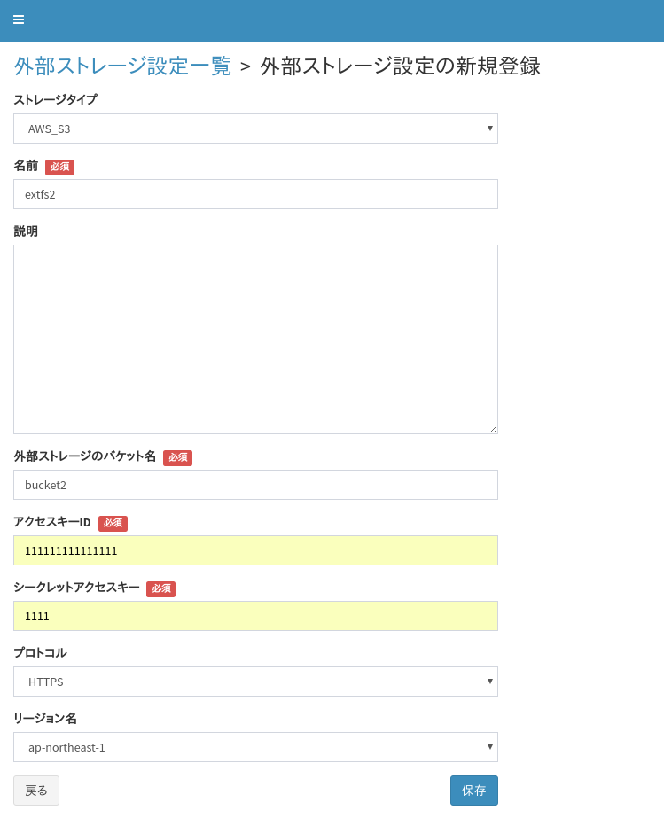

4.12. テナント設定 - 外部ストレージ設定¶
S3互換オブジェクトストレージをファイルストレージのバックエンドとして 使用するための設定を行います。
概要¶
BaaS の「ファイルストレージ」機能は、デフォルトでは MongoDB の GridFS 上に ファイルを保存するようになっています。
この他に、S3互換オブジェクトストレージにファイルの本体を置くことも可能です。 S3互換オブジェクトストレージを使用することで、より大容量のファイルを安価な ストレージ上に置くことが可能になります。
外部ストレージ設定¶
{kind=link}
S3互換オブジェクトストレージ(以下外部ストレージ)を使用するためには、 S3互換オブジェクトストレージに接続するための設定情報を登録する必要があります。 本設定は、S3互換オブジェクトストレージの「バケット」毎に作成する必要があります。
デベロッパーコンソールの「外部ストレージ設定」でこの接続設定を行います。
「追加」ボタンを押して設定を追加します。 以下の設定が必須となります。
- ストレージタイプ: AWS S3 を使用する場合は “AWS_S3” を、その他のS3互換ストレージ(NECCIなど)を使用する場合は “AWS_S3_COMPATIBLE” を選択します。
- 名前: 設定の識別名を入力します
- 外部ストレージのバケット名: S3互換オブジェクトストレージ側のバケット名を指定します。
- アクセスキーID/シークレットアクセスキー: 認証用の情報を指定します。
- リージョン名: AWS S3 を使用する場合はリージョンを指定します。
- エンドポイント: AWS S3以外を使用する場合はエンドポイントを指定します。
外部ストレージの利用¶
外部ストレージを利用するためには、２通りの方法があります。
a) 全ファイルバケットのファイルを1つのデフォルト外部ストレージバケットに格納¶
テナントの「基本設定」より、「デフォルト外部ストレージ」に接続設定を指定すると、 全ファイルバケットのデータは指定された1つの外部ストレージ(バケット)に格納されます。
ファイル本体はすべて1つの外部ストレージ(バケット)に入りますが、 BaaS のファイルバケットとファイルの紐付けは BaaS 側で管理していますので、 ファイルバケット間でデータが混ざることはありません。
b) テナントのファイルバケット毎に、ファイルを異なる外部ストレージバケットに格納¶
ファイルバケット毎に異なる外部ストレージ(バケット)に格納したい場合は、 個別の「ファイルバケット」の設定より「外部ストレージ」を個別に指定します。
Attention
1つの外部ストレージ設定に紐付けることができるのは、1つのファイルバケットもしくは テナントのデフォルト外部ストレージのみです。複数のファイルバケットに紐付けることは できません。
a), b) の混在¶
a), b) を混在させることもできます。
ファイルバケットで個別に 外部ストレージバケットを指定している場合は、 そのファイルバケットに格納するファイルは指定された外部ストレージバケットに 格納されます。
指定がない場合は、デフォルト外部ストレージバケットに格納されます。
注意事項¶
BaaS を使用せず 外部ストレージ側で追加したファイルの扱い¶
BaaS を使用せず直接外部ストレージ側にファイルを追加した場合は、以下のような扱いとなります。
- 外部ストレージ側に直接追加したファイルにはアクセスできません。
ただし、上記 b) の設定を行ったファイルバケットに限り、以下の条件において外部ストレージ側で追加したファイルにもアクセス可能です。
ファイルメタデータ取得、またはファイルダウンロード REST API では、指定したファイル名に合致するファイルのメタデータ取得とダウンロードが可能です。
- この際、ファイルの Content ACL は、anonymous で Read/Write できるように設定されます。変更したい場合は、別途ファイルメタデータ変更 REST APIを呼び出してください。
- 上記の REST API が一度実行されると BaaS側にファイルメタデータが作成されるため、ファイル一覧 REST API で該当ファイルの情報を取得できるようになります。
ファイルが存在する状態での設定変更¶
ファイルがすでに存在する状態で以下の変更を行うと、ファイルデータにアクセスできなくなりますので、 原則変更しないようにしてください。
- テナントの「デフォルト外部ストレージ」の変更
- ファイルバケットの「外部ストレージ」の変更
BaaS ファイルバケットの削除に伴うバケット内のファイル削除¶
- MongoDB の GridFSと関連付けたファイルバケットの場合は、バケットの削除に伴い、ファイルのメタデータとファイルが削除されます。
- 外部ストレージと関連付けたファイルバケットの場合は、バケットの削除に伴い、ファイルのメタデータのみ削除されます。 外部ストレージに保存したファイルの削除について、各外部ストレージの管理コンソール上で実施してください。
ファイル名制約¶
外部ストレージを使用する場合でも、デフォルトのファイルストレージと同様のファイル名制約が適用されます。 詳細は 制限値・スレショルド・文字制約 を参照ください。